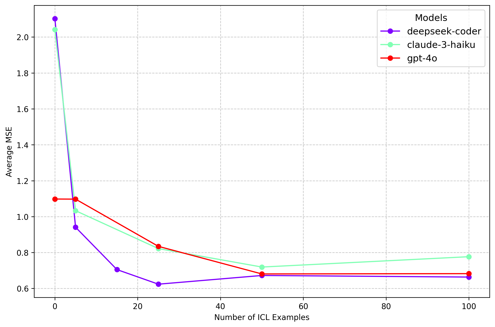

Mitchell Bosley
Postdoctoral Researcher, Schwartzh Reisman Institute, University of Toronto
About Me
I am a Postdoctoral Researcher at the Schwartz Reisman Institute for Technology and Society at the University of Toronto, and a Ph.D. candidate in the Department of Political Science at the University of Michigan. I am working at the intersection of computational social science, legislative studies, and applied machine learning. My current research focuses on applications of AI and machine learning to the study of political behavior and institutions, with a particular emphasis on the capacities of these models to measure political concepts from text data, persuade individuals to change their political attitudes, and simulate political processes such as legislative bargaining and coalition formation. You can find my CV here.
Publications
Improving Probabilistic Models in Text Classification via Active Learning
with Saki Kuzushima, Ted Enamorado, and Yuki Shiraito. American Political Science Review (APSR), 2024
We developed a new text classification algorithm that combines a probabilistic model with active learning to significantly reduce the need for human-labeled documents, thus cutting down on labeling costs. Our method performs as effectively as existing state-of-the-art techniques but with much lower computational demands, as demonstrated by our validation study and replication of two published studies using far fewer labeled data.
View publicationCurrent Research
Towards Qualitative Measurement at Scale: A Prompt-Engineering Framework for Large-Scale Analysis of Deliberative Quality in Parliamentary Debates ▼
This paper introduces a novel approach to automating complex qualitative coding tasks using large language models (LLMs). Focusing on the Discourse Quality Index (DQI), a widely used measure of deliberative quality in political communication, I demonstrate that carefully engineered prompts can enable LLMs to generate high-quality annotations at a level comparable to expert human coders.
Key findings:
- LLMs can achieve human-level performance in coding parliamentary speeches using the DQI framework
- Many-shot in-context learning significantly improves annotation quality, with optimal performance around 25-50 examples
- Cost-effective models like DeepSeek Coder 2 can outperform more expensive models like GPT-4 when provided with sufficient examples
- LLM-based annotation is significantly faster and more cost-effective than traditional expert coding

Figure 1: This graph shows how model performance improves with the number of in-context learning examples provided, demonstrating the effectiveness of the prompt-engineering approach.
Does Moral Foundations-Based Personalized Persuasion with AI Reduce Anti-Trans Beliefs?▼
with Semra Sevi, Charles Crabtree, and John Holbein
We seek to test whether AI chatbots equipped with information about survey respondents' self-placement on the dimensions of moral foundations theory can durably reduce anti trans beliefs. Our survey is currently in the field, and we expect to have results by the end of 2024.
Did Suffrage Expansion in British Colonial India Affect Legislative Support for Social Policy?▼
with Thiha Zaw and Ajit Phadnis
We provide a new dataset of textual records from the Indian Legislative Assembly and Council from 1919-1947 to study the effects of suffrage expansion on legislative support for social policy, including tabulated data on the number of votes for and against social policy bills. We find that suffrage expansion led to a significant increase in legislative support for social policy.
Teaching
Introduction to Political Analysis
University of British Columbia, Summer 2023
This course provides students with a foundational understanding of the principles and methods used in political science. Through interactive lectures and engaging discussions, students will learn how to:
- Develop answerable research questions and form hypotheses about political phenomena
- Define and operationalize key political concepts
- Measure and analyze complex data
- Evaluate relationships of cause-and-effect
- Communicate research findings effectively